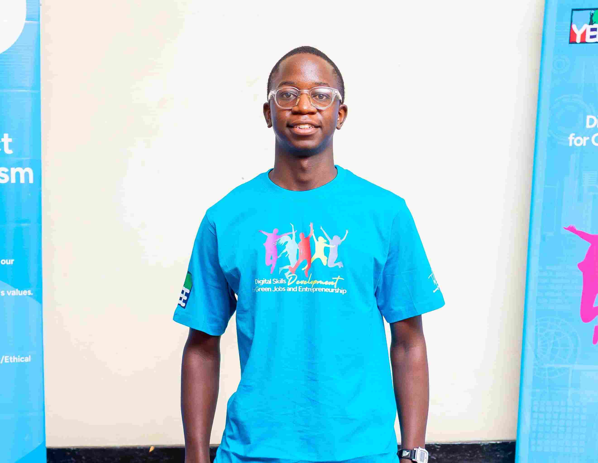

Richie Mpofu | WDD 130

I am Richie Mpofu, a dedicated web design student with a sharp eye for detail and a strong passion for bringing creative digital visions to life. Currently, I am deeply engaged in building, refining, and troubleshooting a professional whitewater rafting website project named FlowState Rafting. Along this journey, I have successfully tackled a wide range of technical challenges—from configuring Git version control and optimizing image file sizes to meet strict performance limits, to structuring semantic HTML and fine-tuning external CSS stylesheets to match exact design specifications. Through every obstacle, I have shown continuous persistence and a steadfast drive to master modern web development standards, ensuring every element of my site meets high-quality criteria.
My journey in web design is fueled by a commitment to excellence and a desire to create engaging, user-friendly digital experiences. I am constantly seeking to expand my skill set, staying abreast of the latest industry trends and best practices. My goal is to not only meet but exceed expectations in every project I undertake, delivering websites that are both visually appealing and functionally robust.
As I continue to grow in my web design career, I am eager to collaborate with like-minded professionals and contribute to innovative projects that challenge my abilities and allow me to make a meaningful impact in the digital landscape. I am excited about the future of web design and look forward to the opportunities that lie ahead, where I can apply my skills, creativity, and dedication to create exceptional online experiences.